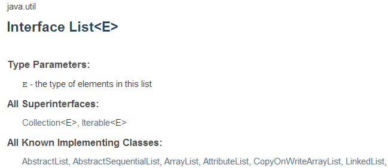

想想你平時撰寫的一些應用程式，大部份是在處理一組資料，Java 對管理資料用的容器（Container）型態，在語法上提供直接支援的只有陣列，其餘則是以程式庫的形式存在，除了標準程式庫之外，還有各式開放原始碼程式庫可供選擇。
在這邊將會介紹 Java 中的陣列、
List、Set，在鍵（Key）值（Value）結構的型態上，則介紹 Map。除了標準 API 的容器類別實作之外，還介紹了 guava-libraries 的 Collections 實作。
陣列型態
Java 目前唯一在語法上提供支援的是陣列，如果你需要容量固定且有序的容器，就可以使用陣列。例如Integer[] numbers = {1, 2, 3};，可以建立容量為 3 的陣列而索引為 0、1、2 的陣列。 在 Java 中陣列是物件，雖然如此，基本上與陣列有關的屬性只有
length，可用來取得陣列的容量。如果你想對陣列做任何其他操作，可以使用 java.util.Arrays 提供的 static 方法。像是使用 fill 於陣列中填充元素、使用 copyOf 來複製陣列等簡單操作，若是需要更多對容器的操作，建議使用其他容器型態。
List 型態
如果需要有序具索引特性的容器，且需要比陣列擁有更多功能，可以使用List，這個型態定義在 java.util 套件中。如果已知有若干元素，可以使用 java.util.Arrays 提供的 static 方法 asList 來建立 List 實作物件。例如：
List<Integer> numbers = Arrays.asList(1, 2, 3);如果事先不知道要收集哪些元素，可以直接建立
List 的實作物件，你完全可以視需求採用適當資料結構實作的物件，像是內部實作採陣列的 ArrayList、採鏈結的 LinkedList 等標準 API 中定義的物件，甚至是來自開放原始碼的 List 實作物件，像是後續會介紹的 guava-libraries。例如，如果你需要在收集之後，擁有較好的索引存取效率，可以採用 ArrayList。
List<Integer> numbers = Arrays.asList(1, 2, 3);
List<Integer> collector = new ArrayList<>();
collector.add(10);
collector.addAll(numbers);
collector.size(); // 4在上面的範例中，由於宣告
collector 時已經指定了 List<Integer>，表示要收集的元素都是 Integer，因此建構實作物件 ArrayList 時，就不用於 <> 中再指定 Integer 型態，編譯器會自行由 collector 的型態中推斷，ArrayList 中裝載的型態是 Integer，實際上這是 JDK7 之後的新功能，在之前版本，你必須明確地定義為 List<Integer> collector = new ArrayList<Integer>()。
Set 型態
Set 型態是無序群集（Collection），管理的元素不會重複，照例地，你可以擁需求選用適當的資料結構實作物件，像是基於雜湊（Hash）的 HashSet，或者是基於紅黑樹實作的 TreeSet。以下是使用 Set 來模彷 Python Tutorial 第二堂（2）中 set 的示範：
import java.util.*;
import static java.lang.System.out;
public class Main {
public static void main(String[] args) {
Set<String> admins = new HashSet<>(Arrays.asList("Justin", "caterpillar"));
Set<String> users = new HashSet<>(Arrays.asList("momor", "hamini", "Justin"));
out.println(admins.contains("Justin")); // 是否在站長群？true
Set<String> intersection = new HashSet<>(admins);
intersection.retainAll(users); // 同時是站長群也是使用者群的？
out.println(intersection); // [Justin]
Set<String> union = new HashSet<>(admins);
union.addAll(users); // 是站長群或是使用者群的？
out.println(union); // [momor, hamini, Justin, caterpillar]
Set<String> adminsButNotUsers = new HashSet<>(admins);
adminsButNotUsers.removeAll(users); // 站長群但不使用者群的？
out.println(adminsButNotUsers); // [caterpillar]
Set<String> xor = new HashSet<>(union);
xor.removeAll(intersection); // xor
out.println(xor); // [momor, hamini, caterpillar]
out.println(admins.containsAll(users)); // ∈，false
out.println(users.containsAll(admins)); // false
}
}除了
List、Set 本身定義的操作之外，有些操作可以在 java.util.Collections 的 static 方法找到。
Map 型態
鍵值對應的物件，在 Java 中可使用Map 型態，你可以依需求選用適當的資料結構實作，像是 HashMap、TreeMap 等，以下是模彷 Python Tutorial 第二堂（2）中 dict 的示範：
import java.util.*;
import static java.lang.System.out;
public class Main {
public static void main(String[] args) {
Map<String, Integer> passwords = new HashMap<>();
passwords.put("Justin", 123456);
passwords.put("caterpillar", 93933);
out.println(passwords.get("Justin")); // 123456
passwords.put("Hamimi", 970221); // 增加一對鍵值
out.println(passwords); // {Justin=123456, caterpillar=93933, Hamimi=970221}
passwords.remove("caterpillar"); // 刪除一對鍵值
out.println(passwords); // {Justin=123456, Hamimi=970221}
out.println(passwords.entrySet()); // [Justin=123456, Hamimi=970221]
out.println(passwords.keySet()); // [Justin, Hamimi]
out.println(passwords.values()); // [123456, 970221]
}
}Guava Collections
Java 標準 API 的容器物件，著重在功能性的定義與實作，少於考量易用性，加上 Java 本身又是靜態定型（Statically-typed）語言，不少地方都需要型態宣告，因而使用上就現今眼光來說，頗為不便。Java 的世界中有不少的開放原始碼程式庫，可以補強 Java 在這方面的不足，在這邊使用一下 guava-libraries 的 Collections，讓需求在操作上比較方便一些。練習 5：使用 Guava Collections
在這個練習中，將使用 Guava Collections 來改寫先前的一些範例，不過在急著到 Guava 官方網站下載相關 jar 檔案之前，別忘了我們有安裝 Gradle，它可以自動幫你下載 jar 檔案，為此，先在使用者目錄下建立一個 Collections 目錄與 Gradle 慣例的相關子目錄：
~$ mkdir Collections
~$ cd Collections
~/Collections$ mkdir -p src/main/java
~/Collections$ st2 build.gradle最後一個指令建立了 build.gradle 檔案，你可以如下撰寫，使用
'java'、'application' 的 plugin，設定 mainClassName，下載 jar 檔案的來源，以及你想要下載的程式庫名稱、版本等。
apply plugin: 'java'
apply plugin:'application'
mainClassName = "Main"
repositories {
mavenCentral()
}
dependencies {
compile group: 'com.google.guava', name: 'guava', version: '15.0'
}接著編輯 Main.java
~/Collections$ st2 src/main/java/Main.java內容如下：
import java.util.*;
import com.google.common.collect.*;
import static java.lang.System.*;
public class Main {
public static void main(String[] args) {
// List Demo
List<Integer> numbers = Arrays.asList(1, 2, 3);
List<Integer> collector =
ImmutableList.<Integer>builder()
.add(10)
.addAll(numbers)
.build();
out.println(collector.size()); // 4
// Set Demo
Set<String> admins = ImmutableSet.of("Justin", "caterpillar");
Set<String> users = ImmutableSet.of("momor", "hamini", "Justin");
// 是否在站長群？true
out.println(admins.contains("Justin"));
// 同時是站長群也是使用者群的？ [Justin]
out.println(Sets.intersection(admins, users));
// 是站長群或是使用者群的？ [Justin, caterpillar, momor, hamini]
out.println(Sets.union(admins, users));
// 站長群但不使用者群的？ [caterpillar]
out.println(Sets.difference(admins, users));
// xor [caterpillar, momor, hamini]
out.println(Sets.symmetricDifference(admins, users));
// ∈，false
out.println(admins.containsAll(users));
// false
out.println(users.containsAll(admins));
// Map Demo
Map<String, Integer> passwords =
ImmutableMap.of("Justin", 123456, "caterpillar", 93933);
out.println(passwords.get("Justin")); // 123456
out.println(passwords.entrySet()); // [Justin=123456, Hamimi=970221]
out.println(passwords.keySet()); // [Justin, Hamimi]
out.println(passwords.values()); // [123456, 970221]
}
}比較一下與先前範例的差別，看看有沒有比較方便與清楚一些，然後執行
gradle run：
~/Collections$ gradle run第一次執行時，Gradle 會自動下載 jar 檔案，然後進行編譯與執行，你應該看到以下結果：
4
true
[Justin]
[Justin, caterpillar, momor, hamini]
[caterpillar]
[caterpillar, momor, hamini]
false
false
123456
[Justin=123456, caterpillar=93933]
[Justin, caterpillar]
[123456, 93933]如果想要瞭解更多有關 Guava Collections 或更多 guava-libraries 的介紹，可以參考本站的 Guava 教學。
if、switch、while 與 for
流程語法中最簡單的if..else 分支判斷，在 Java 中是這樣寫的：
if(args.length > 1) {
out.println("Hello, " + args[0]);
} else {
out.println("Hello, Guest");
}Java 中的
if..else 是陳述（Statement），有個類似運算式（Expression）形式是三元運算子 ?:。? 前的條件式成立的話，會傳回 : 左邊的值，否則傳回 : 右邊的值。例如上面的程式也可以寫為：
out.printf("Hello, %s%n", args.length > 1 ? args[0] : "Guest")如果想要比對的是某些值，在 Java 中可以使用
switch，它可以用在整數、字串、字元等的比對。例如在 Java Tutorial 第二堂（1）中就看過字串的比對：
...
switch(args[1]) {
case "+": out.println(x.add(y)); break;
case "-": out.println(x.subtract(y)); break;
case "x": out.println(x.multiply(y)); break;
case "/": out.println(x.divide(y));
}
...
whilepublic class GCD {
public static void main(String[] args) {
int m = Integer.parseInt(args[0]);
int n = Integer.parseInt(args[1]);
while(n != 0) {
int r = m % n;
m = n;
n = r;
}
System.out.printf("GCD: %d%n", m);
}
}
forfor(int i = 0; i < args.length; i++) {
out.println(args[i]);
}從頭至尾循序存取是很常見的需求，這邊介紹到的陣列、
List、Set 等，其實都可以使用 foreach 語法，將元素從頭至尾循序迭代：
for(String arg : args) {
out.println(arg);
}實際上，只要是具備
java.lang.Iterable 行為的物件，都可以搭配 foreach 語法，像是 Java Tutorial 第一堂（4）中使用到的 Path 實例，就可以搭配 foreach 來迭代路徑資訊。 練習 6：使用 foreach 迭代路徑
在 Java 中，可以查看 API 文件，確認物件是否擁有某些行為。舉例來說，想瞭解
List 是否為一種 Iterable，可以查看 List 的 API 文件： 
{kind=link}
在 All Superinterfaces 上，可以看到
Iterable，這表示 List 也是一種 Iterable。如果想知道總共有哪些物件具有 Iterable 的行為，則可以查看 Iterable 的 API 文件，看看它的 All Know Implementing Classes 有哪些。 類似地，查看一下
Path 的 API 文件，可以發現它也是一種 Iterable，因此可以撰寫一個程式如下：
import java.nio.file.*;
public class ForEach {
public static void main(String[] args) {
for(Path parent : Paths.get(args[0])) {
System.out.println(parent);
}
}
}這個程式可以接受命令列引數，你可以指定一個目錄，程式將會將每個子路徑顯示出來，你可以使用
javac 編譯、java 來執行，或者是使用至目前為止習得的 Gradle 工具來建構程式並執行。